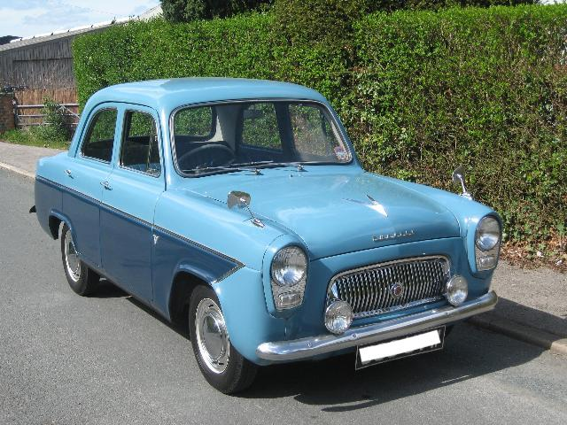

Introducing TC4985
Many T-series owners have been custodians of one or more MGs for many years. For me it was a case of wanting to be a TC owner for many years. During the summer following my first year at university I worked so as to save up to by a car. There were a number to TCs advertised that were within my budget, but my Father talked me out of looking at TCs! He was probably right on two fronts. Firstly, if I’d gone to view one I would have wanted a TC even more and secondly, a TC would not really have been practical to take all my ‘stuff’ backwards and forwards between Hertfordshire and Lancaster. So I ended up with a Ford Prefect. Not just any old Ford, but a ten year old 107E; the rounded body of the 100E, but with the overhead valve engine and four-speed gearbox of the Anglia 105E. This photo is not my car, but mine was also this two-tone blue. It served me well for a number of years, carrying my flat-mates ’stuff’ up and down to Lancaster as well.
Then came retirement and just 46 years after first wanting a TC I was in a position to own one, with just enough cash to buy it, perhaps enough time to maintain it and a wife who, somewhat reluctantly, agreed to let me get one. My aim was to find a car that I could drive and ‘tinker with’; in other words, one that had already been restored. I didn’t have the money, the time or the skills to do a restoration, as much as I would like to try. I looked at several cars that were either too expensive, too restored or needing too much work. By ’too restored’ I’m referring to a car that had been restored in the US and was too shiny, in a red that didn’t look right and was in a carpeted garage!
 I’d seen a 1948 TC advertised on the Octagon Club web site, but it was a little further away than I really wanted to travel. However, after speaking to the owner I persuaded my wife to have a day out in that direction and we saw TC4985. It was sequoia cream with green upholstery. After crawling over it, with my limited and theoretical knowledge of TCs, and being taken for a drive in it, I was hooked, just as my Father knew I would be all those years before. So in June 2015 I bought a TC. I toyed with the idea of driving TC4985 the 125 miles home to West Sussex, but decided to arrange to go with a local vehicle transporter to collect it. This was just as well, since after driving the car ten miles the brakes locked on!
I’d seen a 1948 TC advertised on the Octagon Club web site, but it was a little further away than I really wanted to travel. However, after speaking to the owner I persuaded my wife to have a day out in that direction and we saw TC4985. It was sequoia cream with green upholstery. After crawling over it, with my limited and theoretical knowledge of TCs, and being taken for a drive in it, I was hooked, just as my Father knew I would be all those years before. So in June 2015 I bought a TC. I toyed with the idea of driving TC4985 the 125 miles home to West Sussex, but decided to arrange to go with a local vehicle transporter to collect it. This was just as well, since after driving the car ten miles the brakes locked on!
 When I bought TC4985 I knew that originally, in March 1948, it had been exported to the USA (prior to the introduction of the EXU model in December) and had been brought back to the UK in 1990. From the receipts I knew that someone in East Sussex had done quite a lot of restoration on the car. Later I discovered that the car had been advertised as “an ideal restoration project”. In fact it had no seats or floor and from the photo you can see that it had a significant amount of surface rust on the body panels. When I spoke to the first UK owner he said that by the time he had finished working on the car he had put on some weight and could no longer get behind the wheel! So he sold it. It seems that subsequently he has lost weight and the week before I spoke to him he had bought a TA!
When I bought TC4985 I knew that originally, in March 1948, it had been exported to the USA (prior to the introduction of the EXU model in December) and had been brought back to the UK in 1990. From the receipts I knew that someone in East Sussex had done quite a lot of restoration on the car. Later I discovered that the car had been advertised as “an ideal restoration project”. In fact it had no seats or floor and from the photo you can see that it had a significant amount of surface rust on the body panels. When I spoke to the first UK owner he said that by the time he had finished working on the car he had put on some weight and could no longer get behind the wheel! So he sold it. It seems that subsequently he has lost weight and the week before I spoke to him he had bought a TA!
Although the second UK owner replaced the wiring harness and had the dampers rebuilt, most of the work he did on the car was cosmetic. He removed the underseal that had been applied by the previous owner, removed the wing mirrors, had the body resprayed, changed the headlights and some instruments to TC versions and fitted a new hood. Judging by the other contents of his four-car garage, he enjoyed ‘improving’ classic cars and then selling them on.
Following a little research I was able to track down one of the US owners of TC4985, a British ex-pat living in Connecticut. He had bought the car as a collection of bits after the previous owner gave up on a restoration. However, apart from a couple of photographs he had no records of prior and post owners or of dates. His one statement was that he wished he had never sold the car! The only other US contact I found was the ‘dealer’ who had sold it back to the UK. Since he was more of a ‘wheeler dealer’ he also had no records.
When I bought TC4985 it had 148 on the odometer, indicative of the fact that neither of the two UK owners of the car had driven it very far. But now that it is being driven (just over 3,000 miles in the last 3 years) problems are starting to show. Some problems are more of a nuisance, such as the new double duck hood being too tight, stopping the frame from opening fully; some are due to errors in the re-build, such as the steering knuckles being on the wrong sides, and some are due to age, for example cracks in the spindles. So far, the more major jobs that I have done are:
- Replaced brake master cylinder
- Removed bracket beneath radiator; cleaned and painted it
- Replaced engine mounts
- Replaced handbrake cables
- Swapped steering knuckles, which were on the wrong sides
- Replaced cracked spindles on stub axles
- Replaced rubber bushes on front spring shackles and rear springs
- Replaced bushes in distributor to stop oil getting into the cap
- Replaced near side rear hub and half shaft and fitted nuts with seals to both sides
- Removed engine head, replaced valve stem oil seals (one was broken), cleaned and ground valves
- Replaced seals (and missing parts) in front carburetter
And then there were the maintenance-type jobs:
- Got trip meter to work
- Fixed petrol leak from sender unit in tank
- Made and fitted electronic indicator flasher unit
- Cleaned out wiper motor and made new gaskets
- Crack tested drop arm
- Inspected differential and fitted new main gasket to stop oil leak
- Cleaned and painted underside of tunnel and prop shaft
- Relined rear brake shoes
- Fitted missing pedals draught excluder
- Waterproofed hood that leaks through the stitching
I may have spent more time working on the car than I had intended, but it has allowed me to take TC4985 on the annual South Downs Run, organised by the West Sussex MG Owners Club, and on many of the Sussex Wanderers monthly MG runs, sharing the former event with about 200 other MG owners and the latter with 20 to 30 other MGs each month. I’ve spent more time working on TC4985 than I had expected and my wife complains that I take all the space in the garage too often. However, driving my TC makes me feel 19 years old again!
(Written 31st October 2018; published in Totally T-Type 2, February 2019.)
© David James 2020 Last updated: 30th April 2020